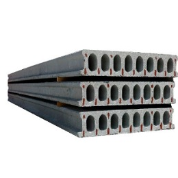
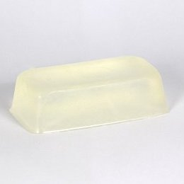

О нашей компании.
«Alfa Team Alliance» совместное узбекско-грузинское предприятие по изготовлению строительных материалов, которое выпускает продукцию по передовым и инновационным технологиям. Современное оборудование и опыт позволяет нам решать самые нестандартные задачи в области производства и поставок ЖБИ. На сегодняшний день наша специализация не только изготовление железобетонных изделий, но и поставка плит из розовой Гималайской соли, извести экстра-качества (пушенка), химических добавок. Благодаря опыту работы сотрудников, мощностям завода и действующей складской программе, мы можем предоставить вам наилучший выбор продукции, которая соответствует ГОСТ и стандартам республики Узбекистан. Доставка может осуществляться по всем регионам республики по самым выгодным ценам.
услуги компании
-
доставка в любой уголок республики Узбекистан
официальная гарантия качества
Оптовая цены
Скидки
почему именно мы?
Современное оборудование и опыт позволяют нам решать самые нестандартные задачи в сфере производства и поставок. Поставка железобетонных изделий, черепицы из розовой гималайской соли, извести (пушонка) экстра качества, пищевых волокон и так далее. Благодаря опыту сотрудников, мощностям заводов и действующей складской программе, мы предлагаем вам лучший выбор продукции, соответствующей ГОСТ Республики Узбекистан.
Наши Товары
Вы можете узнать цену, позвонив оператору
Нажмите на текст ниже
РОЗОВАЯ ГИМАЛАЙСКАЯ СОЛЬ

ГАЗОБЛОКИ
ЛАБСА
СОЛЯНАЯ ПЛИТКА ИЗ РОЗОВОЙ ГИМАЛАЙСКОЙ СОЛЬ
ИЗЕСТЬ (пушёнка)

СИЛИКАТ НАТРИЯ
ГИМАЛАЙСКИЕ КРУГЛЫЕ СОЛЯНЫЕ ПЛИТЫ

ПЛИТЫ ПЕРЕКРЫТИЯ ПБ

SLES
У нас еще множество товаров
которые вы можете увидеть в наших телеграмм и инстаграм каналах